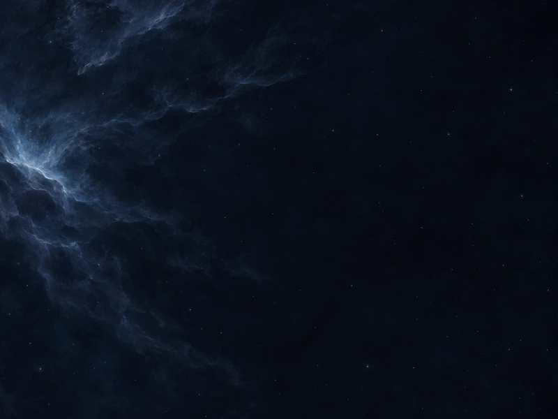
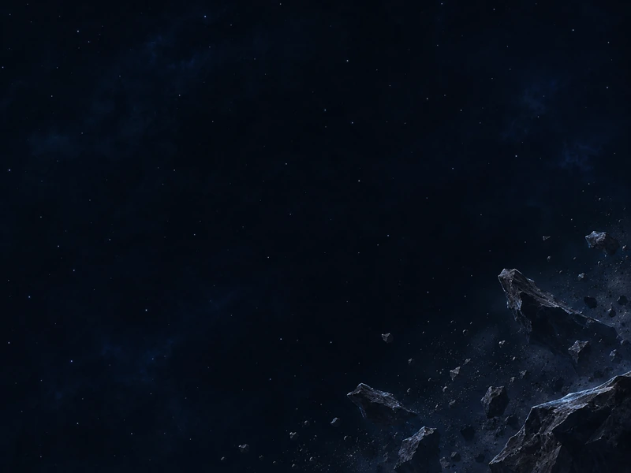
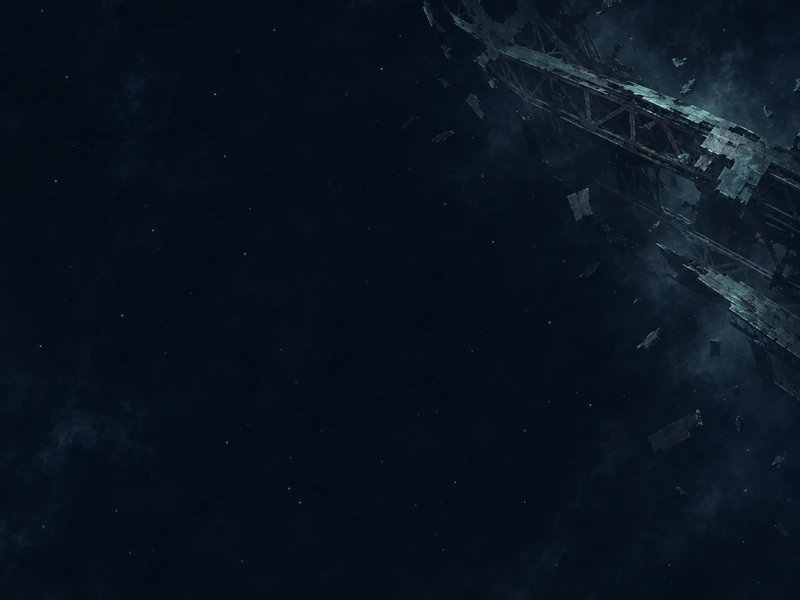
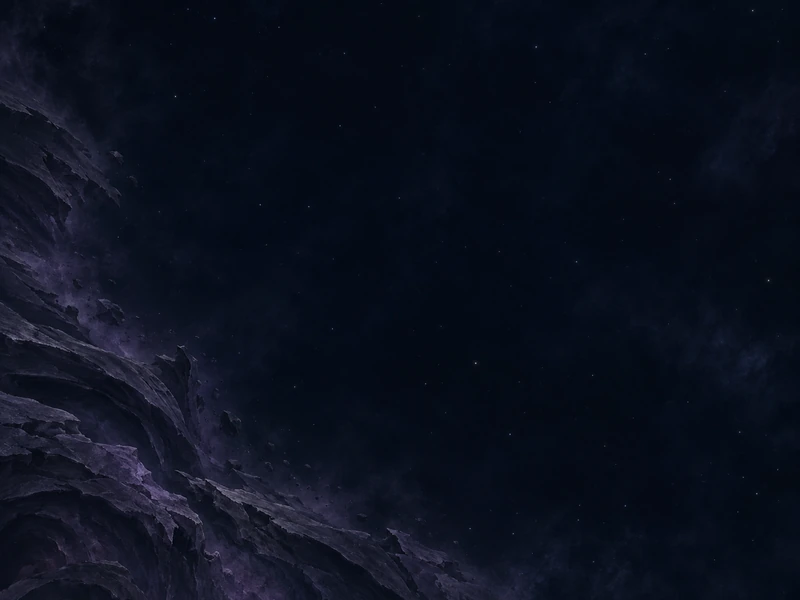
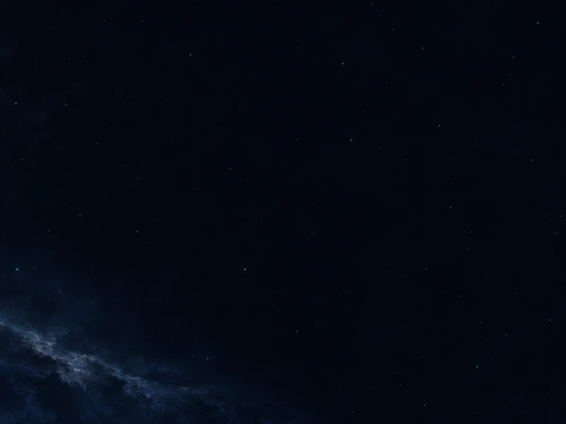

Five scenes, from open space to Varnok’s territory. Toggle the placeholder layer to judge what stays readable over the artwork.





01 / Main menu
Enable JavaScript to select scenes and try the placeholder overlay.